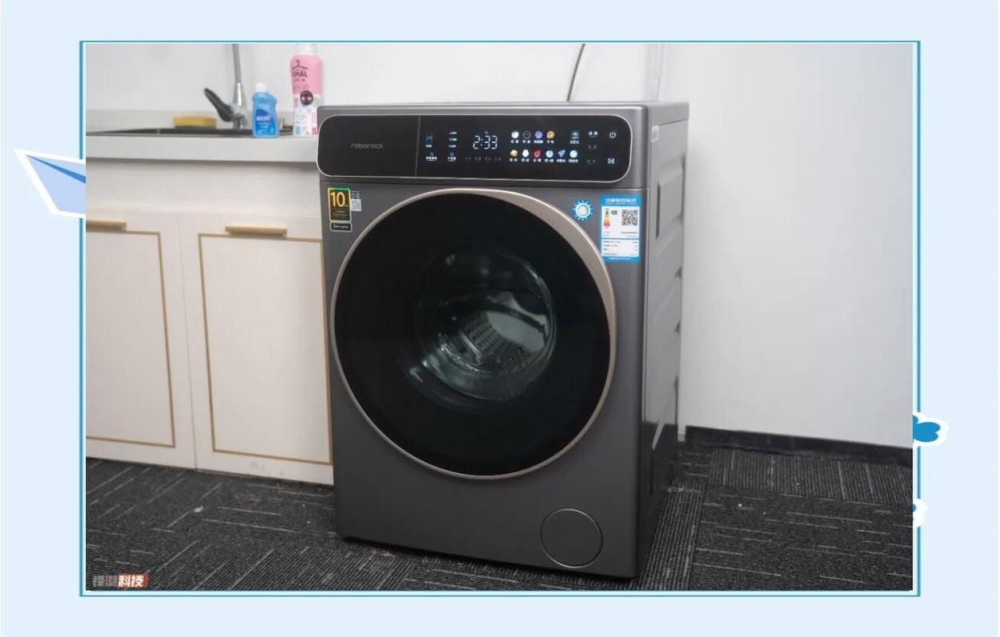

石头 H1 分子筛洗烘一体机

石头科技跨界洗护的代表作，分子筛吸附式低温烘干避免高温损伤衣物，约 12kg 洗涤与约 7kg 烘干满足全家需求。毛絮过滤系统减少烘干残留，App 智能控制体验延续石头一贯的科技感，是洗烘一体机里的新势力。
客观评测
石头 H1 采用分子筛吸附式低温烘干，区别于传统冷凝与热泵方案，官方标称约 12kg 洗涤、约 7kg 烘干容量。实测低温烘干对羊毛衫与混纺衬衫的缩水与变形控制优于普通冷凝洗烘一体机，烘干后衣物柔软度不错。毛絮过滤系统对宠物家庭友好，筒内与绒毛收集器清理方便。App 交互与智能提醒延续石头软件基因，整体完成度较高，但分子筛模组的长期维护成本与耐久性仍需时间检验。
主观点评
作为扫地机老用户，看到石头做洗衣机时的第一反应是好奇，用下来觉得它确实把科技公司的思路带进了洗护：烘干是低温的，羊毛衫不再缩水；毛絮过滤让养猫家庭少了很多碎毛；App 提醒也比传统品牌贴心。它当然不是最便宜的选择，新技术也需要时间证明自己；但对愿意尝鲜又在意护衣的人来说，它带来了一种久违的新鲜感与惊喜。
优点与不足
- 分子筛低温烘干，羊毛与真丝类衣物损伤更小
- 毛絮过滤系统，烘干后衣物与筒内更干净
- App 智能控制延续石头的软件优势，交互流畅
- 分子筛模组后期维护与寿命有待市场验证
- 烘干容量约 7kg，大件床品需分批烘干
参数规格
| 类型 | 洗烘一体机 |
|---|---|
| 洗涤容量 | 约 12 kg |
| 烘干容量 | 约 7 kg |
| 烘干方式 | 分子筛吸附式低温烘干 |
| 电机 | 变频电机 |
| 转速 | 约 1200 rpm |
| 能效 | 一级能效（约） |
| 除菌 | 高温除菌洗 + 烘干除菌 |
| 特色 | 毛絮过滤系统，减少烘干残留 |
| 智能 | App 智能控制与远程预约 |
| 噪音 | 洗涤约 48 dB(A)（约） |
| 内筒 | 不锈钢内筒 |
| 尺寸 | 约 595 × 600 × 850 mm（约） |